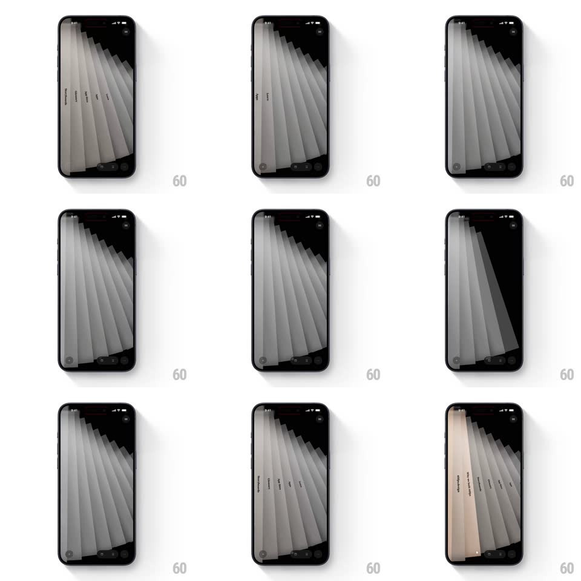

Media
Frame-by-frame

Rebuild this interaction 1:1: Tesseract's swirl menu - a fanned stack of tall menu cards rotates through a 3D staircase spiral as you scroll, each card's label set sideways along its edge.

Rebuild this interaction 1:1: Tesseract's swirl menu - a fanned stack of tall menu cards rotates through a 3D staircase spiral as you scroll, each card's label set sideways along its edge. ## Integration Integration: stack-agnostic spec - springs given as stiffness/damping, timed motions as duration + curve; map every value to your framework and animation library of choice. ## Scene A near-black screen holding a tall fanned spiral of slim menu cards (light gray sheets, each labeled vertically - "We work with Agile", "Lean UX", "Scrum" and more), arranged as a diagonal staircase sweeping from top-left to bottom-right. One card (peach-tinted) is the active focus. A minimal tab bar sits at the bottom. ## Motion spec Pattern: scroll-driven 3D rotation of a fanned card spiral. - Scrolling advances the spiral: each card rotates on its vertical axis (rotateY up to 70deg) while translating along the staircase path - cards near the front are wide and bright, cards receding narrow into thin edges and dim to mid-gray. - The motion is scrubbed to the scroll position 1:1 (no momentum decoupling): one full card per ~120pt of scroll, with perspective ~900px so the fan reads as depth, not a flat carousel. - On release, the spiral snaps to the nearest card (spring ~280/22, ~350ms settle); the focused card warms to its peach tint over 250ms while the previous one cools to gray. - The focused card's label brightens and tracks a slight 2px rise; all other labels sit at 60% opacity. - Cards carry a soft ambient sway when idle (+/-1deg rotateY over 3s, offset per card) so the stack never looks frozen. ## Calibration - Perspective is the whole effect - keep a single shared vanishing point; cards must never look individually flat-rotated. - The staircase keeps constant diagonal spacing; cards overlap by ~70% of their width. ## Reduced motion Cards fade/slide horizontally through the fan positions without rotateY or perspective. ## Don't miss - Labels read bottom-to-top along each card's left edge - rotated 90deg, small caps. - The active card's tint is a warm paper peach against the cool gray stack - the only color on screen besides the tab bar.